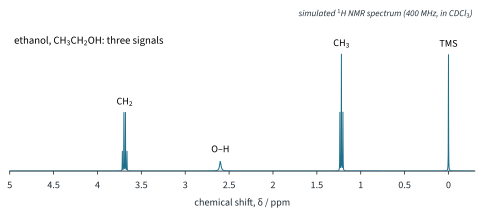
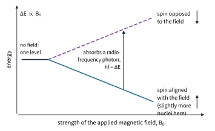
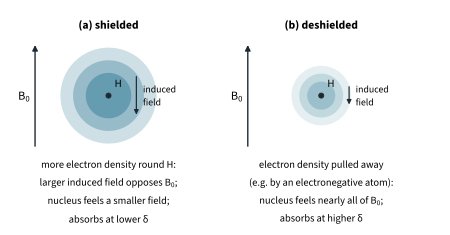
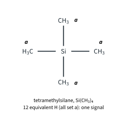
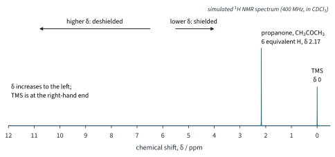
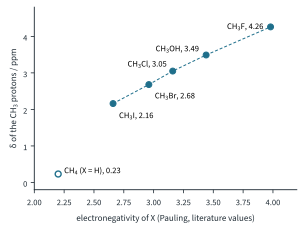
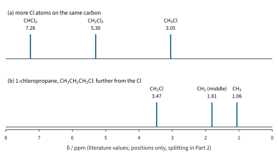
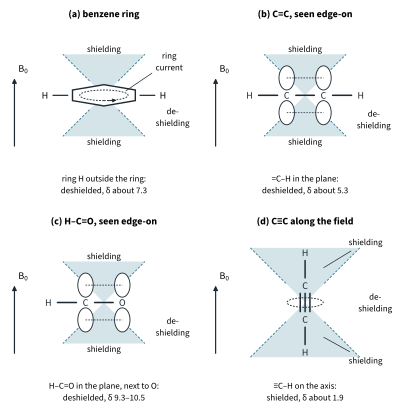
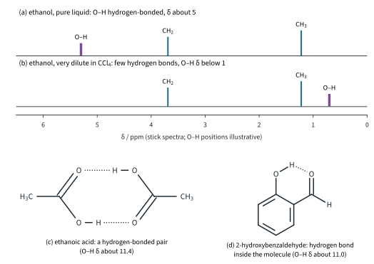
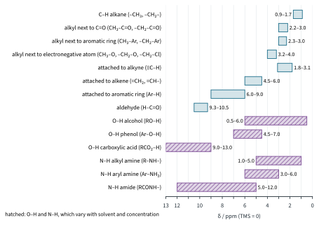

¹H NMR Spectroscopy 1
Chapter H3.3 · ¹H NMR Spectroscopy Part 1
On this page
Introduction
At the end of H3.2 we had a problem. An IR spectrum tells you which functional groups a molecule contains, but not how they are joined together: ethyl ethanoate and methyl propanoate are both esters of formula C4H8O2, and their IR spectra look almost the same. To solve a structure you need to know about the hydrogen atoms: how many different kinds there are, how many of each, and what they are next to. That is exactly what proton nuclear magnetic resonance (1H NMR) spectroscopy tells you.
Fig 1 is a 1H NMR spectrum of ethanol. It has three signals, one for each kind of hydrogen in CH3CH2OH. This Part explains where the signals are (the chemical shift); Part 2 explains their sizes (how many hydrogen atoms each one represents) and their shapes (what is next door).

Key terms
You will use these terms throughout the chapter.
| Term | Meaning |
|---|---|
| Nuclear spin | A property of some nuclei that makes them behave like tiny magnets. A 1H nucleus (a proton) has spin ½: in a magnetic field it can line up in two ways, aligned with the field or opposed to it. |
| Resonance | The absorption of radio-frequency radiation whose photon energy exactly matches the energy gap ΔE between the two spin states, flipping nuclei from the lower to the upper state. |
| Chemical shift, δ | The position of a signal, measured from the TMS signal and divided by the spectrometer frequency, in parts per million (ppm). |
| TMS (internal reference) | Tetramethylsilane, Si(CH3)4, added to the sample itself; its signal is defined as δ = 0. |
| Shielding | The electrons around a proton set up a small field that opposes the applied field, so the nucleus feels a slightly smaller field and absorbs at lower δ. |
| Deshielding | Less electron density around a proton (or an extra field from nearby π electrons in the same direction as the applied field) means the nucleus feels a larger field and absorbs at higher δ. |
| Inductive effect | An electronegative atom or group pulls electron density through the σ bonds away from nearby C–H bonds, deshielding those protons. |
| Anisotropic effect (anisotropy) | π electrons circulating in the applied field set up their own field, which is different in different directions: it shields some regions near the group and deshields others. |
| Hydrogen bonding | A proton in a hydrogen bond has electron density pulled towards the lone pair it bonds to: it is deshielded, so its δ is higher. |
| Labile proton | A hydrogen atom on O or N (O–H, N–H, COOH) that is easily exchanged with other such hydrogen atoms (Part 2). |
| Deuterated solvent | A solvent in which every hydrogen atom has been replaced by deuterium, D (2H), such as CDCl3; D gives no signal in a 1H spectrum. |
Nuclear spin and the absorption of energy
Some nuclei behave like tiny bar magnets: they have nuclear spin. You met this in Topic 1 Part 1 and in H3.1 Part 2. The 1H nucleus, a single proton, has spin ½. With no magnetic field around it, its two possible orientations have the same energy. Put it in a strong applied magnetic field, B0, and it can line up in only two ways:
- aligned with the field: the lower-energy state;
- opposed to the field: the higher-energy state.
The gap between them, ΔE, is proportional to the strength of the field: double B0 and you double ΔE (Fig 2). Even in the strongest magnets the gap is tiny, so the photons that match it are radio waves. A typical modern instrument uses a field of about 9.4 T (literature value), in which protons absorb radio waves of about 400 MHz: it is called a "400 MHz spectrometer". (H3.1 Part 2 showed how small these photon energies are; 9813 does not ask you to calculate them.)

When radio-frequency radiation of exactly the right frequency, so that hf = ΔE, falls on the sample, protons in the lower state absorb photons and are flipped into the upper state. This matching of the photon energy to the gap is called resonance, which gives the technique its name: nuclear magnetic resonance (NMR).
There is a catch. A photon of the right energy can just as easily push a proton down from the upper state as up from the lower one. Net absorption happens only because there are slightly more protons in the lower state than in the upper state. The excess is very small, so NMR signals are weak and the sample needs to be fairly concentrated (a few milligrams in about 0.6 cm3 of solvent is typical).
Which nuclei can be seen? Only those with nuclear spin.
- 1H (spin ½): the nucleus this chapter is about. Almost all hydrogen is 1H.
- 12C and 16O have no nuclear spin: they give no signal at all, and they have no effect on the signals of the protons near them. Almost all the carbon and oxygen in a molecule is of these isotopes.1
- Deuterium, D (2H), also has nuclear spin, but it absorbs at a very different frequency, so D is invisible in a 1H spectrum and does not split 1H signals.2 This is why the solvents used for 1H NMR have their hydrogen atoms replaced by deuterium (later in this Part), and why D2O can be used to find O–H and N–H protons (Part 2).
In outline, the sample (dissolved in a deuterated solvent, in a narrow glass tube) sits in a very strong magnet, is exposed to radio waves, and a detector records which frequencies are absorbed. Details of the instrument are not required.
Why protons absorb at different frequencies: shielding
If every proton felt exactly the field B0, every proton in every molecule would absorb at exactly the same frequency and NMR would be useless for finding structures. Fig 1 shows that this is not so. The reason is the electrons.
Every proton in a molecule is surrounded by electrons. In the applied field these electrons circulate, and moving charges make their own small magnetic field. This induced field opposes B0. So the nucleus feels a slightly smaller field than B0: the electrons shield it (Fig 3). A smaller field means a smaller ΔE, so the shielded proton comes into resonance at a slightly lower frequency.
Anything that removes electron density from around a proton reduces the shielding: the proton is deshielded, feels more of B0 and comes into resonance at a higher frequency. The differences are tiny, a few parts in a million of the frequency, but modern spectrometers measure them easily.

Three factors decide how much a proton is shielded, and they are the three factors in the syllabus: the electronegativity of nearby atoms (the inductive effect), the fields set up by nearby π electrons (anisotropy), and hydrogen bonding. Before we look at them, we need a scale on which to measure the positions of signals.
The chemical shift scale and tetramethylsilane
The δ scale
The frequency at which a proton absorbs depends on the field, so a signal at a certain frequency on one instrument would be at a different frequency on a stronger instrument. To get a number that is the same on every instrument, we measure each signal's frequency relative to a reference compound, TMS, and divide by the spectrometer frequency. This gives the chemical shift, δ:
δ = (νsample − νTMS) / νspectrometer × 106
where νsample − νTMS is the frequency of the signal measured from the TMS signal, in Hz, and νspectrometer is the operating frequency of the spectrometer, in Hz. The frequency differences are millionths of the spectrometer frequency, so the factor 106 turns the answer into a convenient number: δ is in parts per million (ppm). Because the frequency difference and the spectrometer frequency both grow in proportion to the field, δ is the same on any instrument.
Worked example 1: from hertz to δ
On a 400 MHz spectrometer, a signal is 1460 Hz from the TMS signal. (a) Calculate δ. (b) How far from TMS, in Hz, would the same signal be on an older 60 MHz instrument?
(To answer part (a), you have to put both frequencies in Hz: 400 MHz is 400 × 106 Hz.)
(a) δ = 1460 / (400 × 106) × 106 = 3.65 (ppm)
(To answer part (b), you have to turn the formula round: frequency difference = δ × νspectrometer / 106, which is simply δ × the spectrometer frequency in MHz.)
(b) frequency difference = 3.65 × 60 = 219 Hz
The same proton is 1460 Hz from TMS on one instrument and 219 Hz on the other, but δ = 3.65 on both. That is why spectra are always reported in δ, never in Hz.
Tetramethylsilane, TMS
The reference compound is tetramethylsilane, TMS, Si(CH3)4 (Fig 4). A small amount is added to the sample itself, which makes it an internal reference: it feels exactly the same conditions as the sample. Its signal is defined as δ = 0.4

Worked example 2: why TMS?
Give the reasons why TMS is used as the reference in 1H NMR, and explain where its signal appears.
(To answer this, you have to think about what a reference must do: give one clear signal out of the way of the sample's signals, and not interfere with the sample.)
- All 12 hydrogen atoms are equivalent (four identical CH3 groups on one Si), so TMS gives one strong, sharp signal: only a little needs to be added.
- Silicon is less electronegative than carbon (Pauling electronegativities Si 1.90, C 2.55, literature values), so the Si–C bonds push electron density towards the CH3 groups. The TMS protons are therefore more shielded than almost all the protons in organic compounds: their signal lies to the right of nearly every other signal, out of the way.
- It is chemically inert, so it does not react with the sample.
- It is volatile (b.p. about 27 °C, literature value), so it is easily removed afterwards if the sample is needed again.
- It is soluble in most organic solvents and non-toxic.
Because the TMS protons are so strongly shielded, the TMS signal sits at the right-hand end of the spectrum, and almost every other signal has a positive δ.
How a spectrum is drawn
By convention, 1H NMR spectra are drawn with δ increasing from right to left, with TMS at δ 0 on the right and the scale running to about δ 12 on the left (Fig 5). So:
- signals to the left (higher δ) are from deshielded protons;
- signals to the right (lower δ) are from shielded protons.

Propanone has six equivalent hydrogen atoms (two identical CH3 groups), so it gives just one signal, at δ 2.17 (literature value).
Deuterated solvents
Samples are run as solutions, usually in CDCl3 (deuterochloroform, trichloromethane with its H replaced by D). A solvent with ordinary 1H atoms would be present in huge excess and its signal would swamp the sample's. Deuterium gives no signal in a 1H spectrum, so the deuterated solvent is "invisible" (Topic 1 Part 1 introduced this). D2O and (CD3)2SO ("DMSO-d6") are used for samples that do not dissolve in CDCl3.
No deuterated solvent is 100 % deuterated. A trace of CHCl3 remains in CDCl3 and gives a small singlet at δ 7.26, and a trace of water in it gives a signal near δ 1.56 (literature values). Every chemist learns to recognise these and ignore them. Part 2 shows how D2O itself is used to pick out O–H and N–H protons.
Electronegativity and the inductive effect
An electronegative atom attached to a carbon pulls electron density through the σ bonds towards itself, away from the C–H bonds on that carbon. This is the inductive effect. The protons on that carbon have less electron density around them, so they are deshielded and absorb at higher δ. The more electronegative the atom, the bigger the effect.
Worked example 3: the CH3X series
The table gives the δ of the CH3 protons in CH3X compounds, with the Pauling electronegativity of X (literature values). Describe and explain the trend.
| Compound | X | Electronegativity of X | δ of the CH3 protons |
|---|---|---|---|
| methane, CH4 | H | 2.20 | 0.23 |
| iodomethane, CH3I | I | 2.66 | 2.16 |
| bromomethane, CH3Br | Br | 2.96 | 2.68 |
| chloromethane, CH3Cl | Cl | 3.16 | 3.05 |
| methanol, CH3OH | O | 3.44 | 3.49 |
| fluoromethane, CH3F | F | 3.98 | 4.26 |
(To answer this, you have to link electronegativity to electron density round the CH3 protons, and electron density to shielding.)
As the electronegativity of X increases from I (2.66) to F (3.98), δ of the CH3 protons rises steadily from 2.16 to 4.26 (Fig 6). The more electronegative X is, the more strongly it pulls electron density away from the C–H bonds, the less the CH3 protons are shielded, and the higher their δ. Methane, with only H on the carbon, is the most shielded of all, at δ 0.23.

Worked example 4: more substituents, and distance
(a) The δ values of the chloromethanes are CH3Cl 3.05, CH2Cl2 5.30 and CHCl3 7.26 (literature values). Explain the trend. (b) 1-chloropropane, CH3CH2CH2Cl, gives three signals, at δ 3.47, 1.81 and 1.06 (literature values). Assign them.
(To answer part (a), you have to see that each extra Cl atom pulls more electron density away from the same C–H bond.)
(a) Each Cl atom added to the same carbon deshields the remaining protons further: δ rises by 5.30 − 3.05 = 2.25 and then by 7.26 − 5.30 = 1.96, about 2 for each Cl. The inductive effects of several substituents add up. The proton of CHCl3, with three Cl atoms pulling on one carbon, absorbs at about the same δ as aromatic protons (it is the residual CHCl3 signal of CDCl3).
(To answer part (b), you have to count the bonds between each set of protons and the Cl atom.) The inductive effect is passed along the σ bonds, and it weakens quickly with each bond:
- δ 3.47: the CH2 next to Cl (CH2Cl), on the carbon that carries the Cl: most deshielded.
- δ 1.81: the middle CH2, one carbon further away: only slightly deshielded, just above the alkane range of the Data Booklet (0.9–1.7).
- δ 1.06: the CH3, two carbons away: almost a normal alkane CH3.
Fig 7 shows both series as positions on the δ scale. (Each of these signals is split into several lines; Part 2 explains why. Here only their positions matter.)

Anisotropy: fields from π electrons
Electronegativity alone cannot explain all chemical shifts. The C–H protons of benzene absorb at about δ 7.3, of ethene at about δ 5.3, but of ethyne at only about δ 1.9, although the sp carbon of ethyne is the most electronegative of the three (literature values). The explanation is the field set up by the π electrons.
π electrons are free to circulate round a π bond or a ring. In the applied field they do, and their circulation sets up an induced field of its own. Unlike the field from the electrons right round a proton, this field is not the same in every direction ("anisotropic" means "different in different directions"). In some regions near the π system the induced field opposes B0: protons there are shielded. In other regions it adds to B0: protons there are deshielded. What matters is where the proton sits (Fig 8):
- Benzene ring: the six delocalised π electrons circulate round the ring (a ring current). The induced field opposes B0 inside the ring and above and below it, but outside the ring, where the ring hydrogen atoms are, it adds to B0. The ring protons are strongly deshielded: δ about 7.3 for benzene (Data Booklet range for Ar–H: 6.0–9.0).
- C=C: the π electrons shield the regions above and below the double bond, and deshield the plane of the molecule, where the =C–H protons are: δ about 5.3 for ethene (booklet range 4.5–6.0).
- C=O: the same pattern. The aldehyde proton, H–C=O, lies in the deshielding region of the C=O bond and is also on a carbon next to the very electronegative oxygen. Both effects push it to the left: δ 9.80 for ethanal, the highest δ of any C–H proton in the booklet table (9.3–10.5).
- C≡C: the cylinder of π electrons round the triple bond circulates round the bond axis. Along the axis, both ends, the induced field opposes B0: a shielding region. The ≡C–H proton lies exactly on the axis, so it is shielded: δ only about 1.9 for ethyne (booklet range 1.8–3.1).

Worked example 5: comparing C–H protons
Explain the δ values (literature values) of the protons in ethane 0.86, ethene about 5.3, benzene about 7.3, ethyne about 1.9 and the CHO proton of ethanal 9.80. Why is the ethyne proton at lower δ than the ethene proton?
(To answer this, you have to decide for each proton whether it is near a π system, where it sits in that system's induced field, and whether an electronegative atom is close.)
| Proton | δ | Explanation |
|---|---|---|
| ethane, CH3–CH3 | 0.86 | No π electrons and no electronegative atom: a normal, well-shielded alkane C–H. |
| ethene, =C–H | about 5.3 | In the plane of the C=C, in the deshielding region of the π electrons. |
| benzene, Ar–H | about 7.3 | Outside the ring, where the ring current of six delocalised electrons adds to B0: strongly deshielded. |
| ethyne, ≡C–H | about 1.9 | On the axis of the triple bond, in the shielding region of the circulating π electrons. |
| ethanal, H–C=O | 9.80 | In the deshielding region of the C=O and on a carbon next to the electronegative O: both effects add. |
The sp carbon of ethyne is more electronegative than the sp2 carbon of ethene, so by electronegativity alone the ethyne proton should be at higher δ. It is not, because anisotropy wins: the ethyne proton sits in a shielding region, the ethene proton in a deshielding one.
Hydrogen bonding
A hydrogen atom on O or N can take part in a hydrogen bond, O–H···O or N–H···O (Topic 2). In the hydrogen bond, the electron density round the H is pulled further away, towards the lone pair of the other atom. The proton is deshielded, so the more hydrogen bonding, the higher the δ of the O–H or N–H signal.
The amount of hydrogen bonding depends on how close together the molecules are, on the solvent and on the temperature. That is why the Data Booklet gives such wide ranges for O–H and N–H protons (alcohol O–H 0.5–6.0) and adds the note: "δ values for –O–H and –N–H protons can vary depending on solvent and concentration." O–H and N–H signals are also often broad, because the protons are passed quickly between molecules.
Worked example 6: hydrogen bonding and δ
(a) The O–H signal of pure ethanol is at about δ 5, but in a very dilute solution of ethanol in tetrachloromethane, CCl4, it is below δ 1 (literature values, approximate). The CH2 and CH3 signals hardly move. Explain. (b) The O–H signal of ethanoic acid is at about δ 11.4 (literature value). Explain why it is so high.
(To answer part (a), you have to decide what dilution in a non-polar solvent does to hydrogen bonds between ethanol molecules.)
(a) In pure ethanol almost every O–H is hydrogen-bonded to the O of another molecule, so the O–H proton is strongly deshielded (about δ 5). Diluting in CCl4, which cannot form hydrogen bonds, separates the ethanol molecules: few O–H groups are now hydrogen-bonded, so the O–H protons are more shielded and their signal moves to lower δ, below 1 (Fig 9(a) and (b)). The C–H protons take no part in hydrogen bonding, so their signals hardly move.
(b) Carboxylic acids form strongly hydrogen-bonded pairs (dimers), with two O–H···O=C hydrogen bonds holding two molecules together (Fig 9(c)). Each O–H proton is also on an oxygen next to a C=O group, which pulls electron density away. Both effects deshield it strongly: carboxylic acid O–H protons appear at 9.0–13.0 in the booklet table, further left than almost any other proton.

Further example: a hydrogen bond inside the molecule
In 2-hydroxybenzaldehyde the O–H group and the CHO group are on neighbouring ring carbons, and the O–H forms a hydrogen bond to the C=O oxygen of the same molecule (Fig 9(d)). The O–H signal is at about δ 11.0 (literature value), and it does not move on dilution. Diluting separates molecules from each other, but the hydrogen bond is inside each molecule, so it is not broken. Comparing spectra at two concentrations is therefore a way of telling an intramolecular hydrogen bond (inside the molecule) from an intermolecular one (between molecules).
Using the table of typical shifts
The Data Booklet (section 6) gives the typical chemical shifts of protons in different environments. Fig 10 shows the same table as a chart on the δ scale.

The pattern of the chart is the pattern of this Part: alkane protons are on the right (most shielded); next to C=O, a ring or an electronegative atom, they move left (inductive effect, and anisotropy for the ring and C=O); protons on alkenes, rings and aldehydes are further left still (anisotropy); and the hydrogen-bonded acid O–H is furthest left.
Worked example 7: predicting where protons absorb
Use the Data Booklet table to predict the δ range for each set of protons in (a) ethyl ethanoate, CH3COOCH2CH3, and (b) 4-methylbenzaldehyde, CH3C6H4CHO. Compare your predictions with the actual values (literature values): (a) 4.12, 2.05 and 1.26; (b) 9.96, 7.77, 7.33 and 2.43.
(To answer this, you have to identify each set of protons and the group its carbon is attached to, then read the booklet range.)
| Protons | Carbon attached to | Booklet range | Actual δ | Comment |
|---|---|---|---|---|
| (a) O–CH2–CH3 (the CH2) | the ester O | 3.2–4.0 (–CH2–O) | 4.12 | A little above the range: the O is part of an ester, and its C=O pulls electron density away too. |
| (a) CH3–C=O | C=O | 2.2–3.0 (CH3–C=O) | 2.05 | Just outside the typical range (just below it). |
| (a) O–CH2–CH3 (the CH3) | an alkyl C | 0.9–1.7 (alkane) | 1.26 | Inside the range. |
| (b) CHO | (aldehyde H) | 9.3–10.5 | 9.96 | Inside the range. |
| (b) ring H | (attached to the ring) | 6.0–9.0 | 7.77, 7.33 | Inside the range; two kinds of ring H (Part 2). |
| (b) CH3–Ar | the ring | 2.3–3.0 | 2.43 | Inside the range. |
So the table gets you to the right region every time, but the actual values can sit just outside the ranges. In this chapter the simulated spectra use real (literature) δ values, not values moved into the booklet ranges, so you will meet small differences like these.
Summary
The ideas of this Part in one table.
| Factor | Effect on δ | Example (δ, literature values) |
|---|---|---|
| Nuclear spin | 1H has spin ½: two states in a field, gap ΔE ∝ B0; resonance when hf = ΔE (radio waves). 12C, 16O no spin; D not seen. | 400 MHz spectrometer, about 9.4 T |
| Shielding | More electron density: shielded, lower δ (right). Less: deshielded, higher δ (left). | – |
| δ scale and TMS | δ = (νsample − νTMS) / νspectrometer × 106, in ppm; the same on any instrument. TMS: 12 equivalent H, one signal at δ 0, the most shielded; inert, volatile, soluble. | 1460 Hz at 400 MHz: δ 3.65 |
| Electronegativity (inductive effect) | Electronegative atoms deshield: grows with electronegativity, adds up, falls off with distance. | CH3I 2.16 to CH3F 4.26; CH3Cl 3.05, CH2Cl2 5.30, CHCl3 7.26 |
| Anisotropy | π electrons deshield protons on rings, alkenes and aldehydes; shield the proton on an alkyne axis. | benzene about 7.3; ethene about 5.3; ethanal CHO 9.80; ethyne about 1.9 |
| Hydrogen bonding | Deshields O–H and N–H; δ falls on dilution (unless the hydrogen bond is inside the molecule); signals broad and variable. | ethanol O–H about 5 (pure), below 1 (very dilute); ethanoic acid about 11.4 |
Additional information
- About 1.1 % of carbon atoms are 13C (literature value), which does have spin ½. 13C nuclei absorb at a very different frequency and are not seen in a 1H spectrum; their small effect on 1H signals is ignored in this chapter. 13C NMR spectroscopy belongs to the analytical tier, beyond the 9813 syllabus. ↩
- Beyond the syllabus: deuterium has spin 1, not ½. ↩
- Older books call the right-hand (low δ) end of the spectrum "upfield" and the left-hand (high δ) end "downfield". These notes say "lower δ" and "higher δ". ↩
- Beyond the syllabus: modern instruments often set the δ scale from the known position of the solvent's residual signal (for example CHCl3 at δ 7.26) instead of adding TMS. The scale is still defined by TMS = 0. ↩